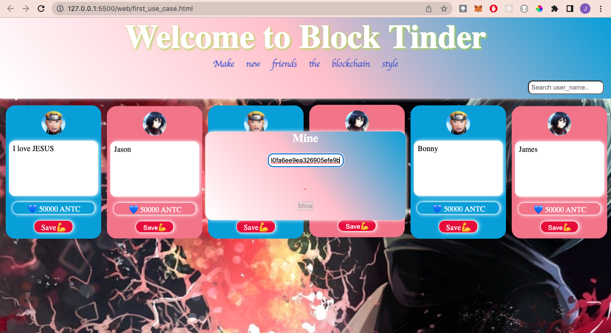

Hello✌🏼,
So glad to have you here checking out this project, as part of my ongoing research on AntiChains. I have decided to
put together this fun project BLOCK TINDER.
Originally the idea for a side project was to build a data storage system where users can store personal information, have the information
inserted into a block and appended to the AntiChain, the idea is to make whosever is interested in retrieving the information able to,
as long as they are authorized, to perform a series of mathematical computation in this case computing a block hash
below a target value (same as Bitcoin), as opposed to Bitcoin which requires you to perform mathematical computation to append to the blockchain.
When the required hash value is generated you then can access the secret message, the goal is to make it easy to append,
difficult to remove.
So Block Tinder is a peek into one of the use case of an Antichain, basically instead of storing secret messages now (users will be able to later), users can
create a block, set its difficult, add their profile picture, and a brief description about themselves, the user is required to pay a deployment fee to have their
block appended to the chain.
Other users can try to mine your block, the miner gets to receive your deployment fee as reward for mining, while the system deducts the mining fee (nonce * 1 antc) from the miners account
. Since you set the difficulty level for your block, you will be required to pay more to deploy to chain, for instance if you have a difficulty of 2, you are required to pay 5000 antc and so on.
For miners, let's say it takes 20,0000 nonces to mine the block, you are to pay it's equivalent which is 20,000 ANTC,
at the end of the whole process, the block is removed from the chain and you become friends with the "minee😎".

Screenshot of Block Tinder
As development is still underway, I decided to share this funny version of Tinder done the blockchain way using "PROOF OF WORK".
To get started:
Check out Block Tinder hereIf you don't have a cell id, go to AntiChain generate one or click the "Generate cell id" at the top of this page, With your generated cell id, you can create a block.
Happy Block Tindering...
If you have any suggestions kindly reach out to me at jasonabbatheleast@gmail.com
Mining a block for friendship
To do so you should have your block on the chain for now, just simply paste in your cell id, click verify, if it is verified the mine button becomes active, then you can mine.
Disclaimer:
This is a demo, please do not upload your personal information on this project, as I cannot guarantee the safety of such information.